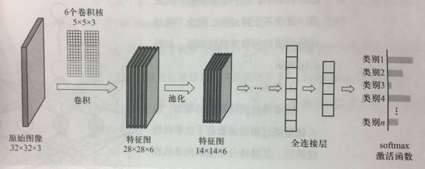

Chapter4 深度学习
4.1 前馈神经网络
MCP模型：
给定$n$个二值化的输入数据$x_i$和相应的权重$w_i$，MCP神经元模型对输入数据线性加权求和，然后使用函数$\Phi$将加权求和结果非线性映射，结果根据阈值二分为$0$或$1$，以完成二分类的任务。

MCP模型模拟的是一个神经元，神经元是深度学习模型中的基本单位。
激活函数：
神经网络使用非线性函数作为激活函数，通过对多个非线性函数进行组合，来实现对输入信息的非线性变换。在MCP模型中即为$\Phi$。

特殊的激活函数：softmax
$softmax(x_i)=\frac{e^{x_i}}{\sum\limits_{j=1}^ke^{x_j}}$
softmax函数一般用于多分类问题中，其反映的是将输入数据$x_i$映射到第$i$个类别的概率
由于softmax输出结果的值累加起来为$1$，因此可将输出概率最大的作为分类目标。
损失函数：
又称为代价函数，用俩计算模型预测值与真实值之间的误差。
1.均方误差损失函数：
$MSE=\frac{1}{n}\sum\limits_{i=1}^n(y_i-\hat{y_i})^2$
其中，训练数据$x_i$对应的真实输出为$y_i$，模型的预测值为$\hat{y_i}$
2.交叉熵损失函数：
$H(p,q)=-\sum\limits_{i=1}^np(x_i)\log q(x_i)$
其中，$p$是样本的真实概率分布，$q$是模型预测的概率分布，交叉熵越小，$p$和$q$的分布越接近
例：
设数据$x$属于类别1，一共有三个类别，因此$y=(y_1,y_2,y_3)=(1,0,0)$为$x$的实际分布概率，预测分布概率为$\hat{y}=(\hat{y_1},\hat{y_2},\hat{y_3})$，因此希望$\hat{y_1}$远大于$\hat{y_2}$和$\hat{y_3}$
（单层）感知机：

一种简单的人工智能网络，单层感知机可以看作多个MCP模型的结合，仅由输入层和输出层构成，但二者仍有不同之处： * 单层感知机在加权求和时还会加上一个偏置项 * 单层感知机的权重并不是预先设置好的，而是通过多次迭代训练得到的，利用了损失函数进行优化
即感知机引入了学习的概念
但是，单层感知机只能区分线性可分数据，对于XOR这类非线性可分的逻辑函数，单层感知机无法模拟其功能

前馈神经网络：

实际上就是多层感知机，其包括输入层，输出层和隐藏层，每个节点表示一个神经元
- 每个神经元只接受前一级的输入，只输出到下一级，没有反馈
- 层与层之间是全连接的，即相邻层之间的神经元完全成对连接，但层内的神经元不相互连接
梯度下降：
在多元函数中，梯度是对每一变量所求导数组成的向量
梯度的反方向是函数值下降最快的方向，因此是损失函数求解的方向
误差反向传播算法（BP）：
一种将输出层误差反向传播给隐藏层进行参数更新的方法，将误差从后向前传递，分摊给各层所有单元，从而获得各层单元所产生的误差，进而依据这个误差来让各层单元负起各自责任，修正各单元参数

为了使损失函数$L$减小，需要求$L$对于$w_1$的偏导，然后按照损失函数梯度的反方向选取一个微小的增量，来调整$w_1$的取值，如$w_1^{new}=w_1-\eta\times\frac{\partial L}{\partial w_1}$
$\frac{\partial L}{\partial w_1}=\frac{\partial L}{\partial O}\frac{\partial O}{\partial \chi}\frac{\partial \chi}{\partial w_1}$
链式求导实现了损失函数对某个自变量求偏导，好比将损失误差从输出端项输入端逐层传播，通过这个传播过程来更新自变量取值
例： 给定一个包含输入层、一层隐藏层和输出层的前馈神经网络，完成三分类问题。对于输入数据$(x_1,x_2,x_3)$，$y_1$，$y_2$，$y_3$只有一个取1，其余两个取0，激活函数为Sigmoid函数。求更新后的$w_7$. 损失函数$L=\frac{1}{3}\sum\limits_{i=1}^3(\hat{y_i}-y_i)^2$ $L$对$w_7$的偏导 $\delta_7=\frac{\partial L}{\partial w_7}=\frac{\partial L}{\partial \hat{y_1}}\frac{\partial \hat{y_1}}{\partial in_{o_1}}\frac{\partial in_{o_1}}{\partial w_7}$ 其中 $\frac{\partial L}{\partial \hat{y_1}}=\frac{2}{3}(\hat{y_1}-y_1)$ $\frac{\partial \hat{y_1}}{\partial in_{o_1}}=\hat{y_1}(1-\hat{y_1})$ $\frac{\partial in_{o_1}}{\partial w_7}=out_{h_1}$
4.2 卷积神经网络
卷积
图像中像素点具有很强的空间依赖性，卷积就是针对像素点的空间依赖性来对图像进行处理的一种技术。
卷积核：
卷积核是一个二维矩阵，矩阵中的数值为进行卷积计算时所采用的权重，通过数据驱动机制学习得到。

图像经过特定的卷积核滤波后，所得到的卷积结果可认为是保留了像点所构成的特定空间分布模式。
如果卷积核中心位置的权重系数越小且与其它卷积权重系数差别越小，则卷积所得到图像滤波结果越模糊，这被称为图像平滑操作。
步长：
表示卷积核每次移动经过的像素点，增大步长可以跳过更多的像素点。
感受野：
卷积所得结果中，每个输出点的取值仅依赖于其在输入图像中该点及其邻域区域点的取值，与这个区域之外的其他点取值均无关，该区域被称为感受野。
在卷积神经网络中，感受野是卷积神经网络每一层输出的特征图上的像素点在输入图像上映射的区域大小。也就是说，感受野是特征图上一个点对应输入图像上的区域。
人的视觉神经细胞对不同的视觉模式具有特征选择性，即不同视觉神经细胞对边界、运动和颜色等不同信息具有强弱不同的选择性。因此，不同卷积核可被用来刻画视觉神经细胞对外界信息感受时的不同选择性。
池化
在图像处理中，可用某一区域子块的统计信息（如最大值或均值等）来刻画该区域中所有像素点呈现的空间分布模式，以替代区域子块中所有像素点取值，即为池化。
对输入的特征图进行下采样，以获得最主要的信息。

卷积神经网络总结

对于输入的海量标注数据，通过多次迭代训练，卷积神经网络在若干次卷积操作，池化操作和激活函数操作下，最后通过全连接层来学习得到输入数据的特征表达，即分布式向量表达。
- 卷积层负责提取图像中的局部特征
- 池化层用来大幅降低参数量级(降维)
- 激活函数层负责非线性化
- 全连接层类似传统神经网络的部分，用来输出想要的结果（总结）
一个卷积神经网络需要学习的参数：卷积核、全连接层权重，激活函数参数。
正则化
用来提高神经网络的泛化能力，缓解过拟合问题。
Dropout：
在训练神经网络过程中，每次参数更新时随机丢掉一部分神经元来减少神经网络复杂度，防止过拟合。
Batch-Normalization 批归一化：
通过规范化的手段，把神经网络每层中任意神经元的输入值分布改变到均值为0、方差为1的标准正态分布。
L1-Norm & L2-Norm：
L1范数为模型参数中各个元素的绝对值之和。
L2范数为模型参数中各个元素的平方和的开方。
两种范数通过在损失函数中添加额外的惩罚项来防止过拟合。